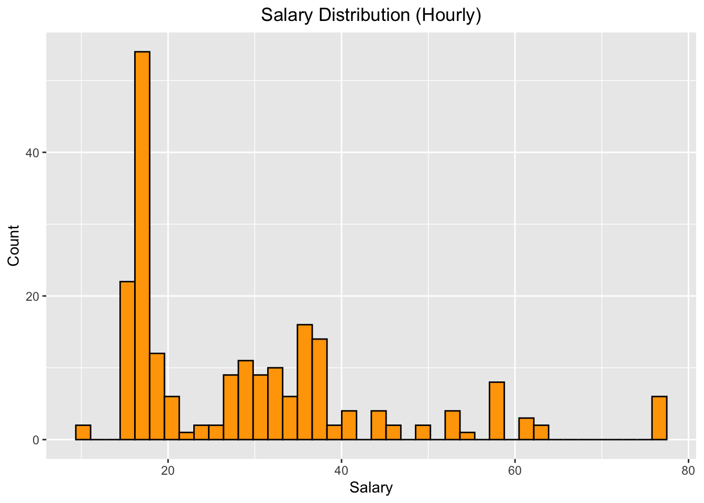
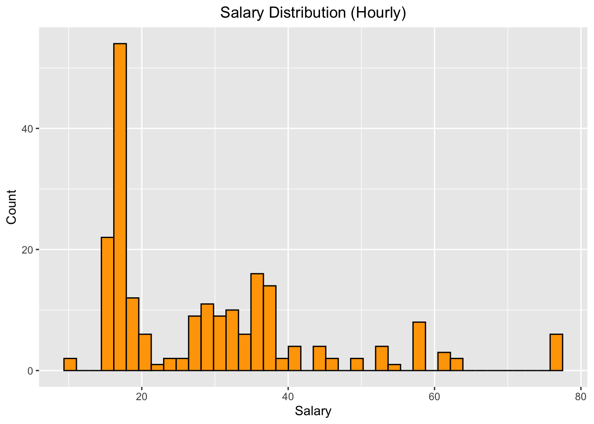
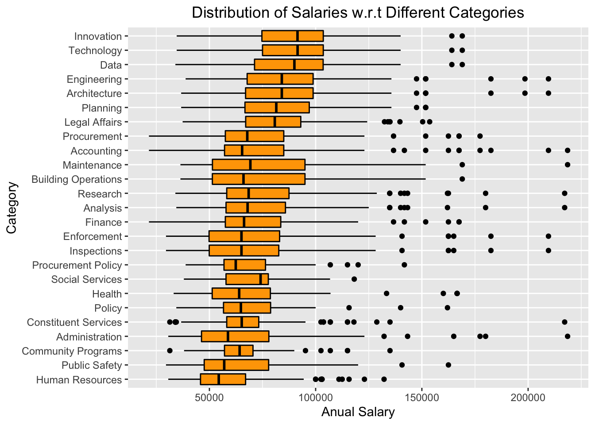
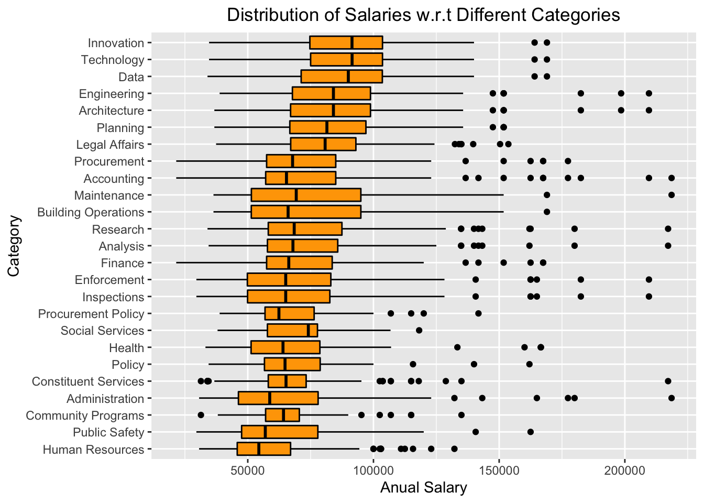

Chapter 5 Results
5.1 Job Count by Category
Since we want to study the total number of jobs for each job category and one particular job could belong to multiple categories, we extract all the categories related to a job, seperate them, and create a new data frame called popular_category, which stores the counts of different job categories. Then, in order to visualize the numbers of job postings among different categories, we draw a descending horizontal bar chart based on his new data frame.

From the graphs below, we can tell that Architecture and Engineering have the most job postings, while Procurement Policy and Social Services have the fewest.
5.2 Distributions of Salaries
We also want to study the distributions of salaries among different types of payroll. Since there are three payroll types in our data set, which are Annual, Daily and Hourly, we will draw three histograms to visualize the distributions. We take the mean of Salary Range From and Salary Range To as our salary for the histogram at the x-axis.

 

From these three plots above, we have the following obeservations: * For most of the jobs, the salaries are given annually. There are also some jobs which have hourly salaries. Only a few of those jobs have daily salaries. * For salaries calculated annually, it has approximately right-skewed normal distribution, which means that most jobs do not have a relatively high salaries. * For salaries calculated daily, there is no specific pattern regarding the distribution. Some jobs have relatively low daily salaries, while others have much higher salaries. * For salaries calculated hourly, most of them has a relatively low value, but there are still some jobs have relatively high hourly salaries.
Then, We also look into our data and find out more information about our salary distribution. For insace, for houly paied jobs, Stationary Engineer and City Medical Specialist have extremly high hourly salaries, while College Aide has low hourly salaries.
 

5.3 Word Clouds for Text Information
5.3.1 How we get started
Meanwhile, we also want to study the minimum qualification requirements and preferred skills for the available jobs in NYC. We want to find if there are any patterns in these two columns and if we can extract any useful information from them. In order to illustrate our findings graphfically, we decide to use Word Clouds to show the most frequent words in these texts.
So what is Word Clouds? Word Clouds is visual representations of text data. They are useful for quickly perceiving the most prominent terms, which makes them widely used in media and well understood by the public. A Word Cloud is a collection of words depicted in different sizes. The bigger and bolder the word appears, the greater frequency within a given text and the more important it is.
In order to extract meaningful vocabularies from the text descriptions, we take advantage of the text mining package tm in R. This package is based on the ideas of Natural Language Processing (NLP). It have methods that can tranform all words to lowercases, remove words that are uninformative in Enlighs such as “a” and “the”, and get rid of whitespaces and punctuations.
After these manipulations on the text data, we can create a new data frame of word frequencies. We can also sort it by frequency and find out the most frequent words under minimum qualification requirements and preferred skills for all jobs or for any particular category of jobs that we are interested in.
5.3.2 Results
Due to the problem of wordcloud2 that only one Word Cloud graph appears after knitting to Bookdown or HTML, we save all our graphs to four seperate html files that can be automatically rendered everytime they are opened in a browser. Here are the link to those files in my GitHub repo: https://github.com/ju-chengyou/5702_Final_Word_Cloud.
Here, we will show the Word Cloud of the most frequent words in Minimum Qual Requirements among all jobs in our dataset.
5.3.2.1 Minium Qual Requirements @ All Jobs
| Minimum Qual Requirements in All Jobs Word Frequency | |
| Word | Frequency |
|---|---|
| experience | 13182 |
| years | 6907 |
| college | 4875 |
| accredited | 4828 |
| education | 4567 |
| satisfactory | 4550 |
| described | 4382 |
| fulltime | 4064 |
| degree | 3931 |
| equivalent | 3471 |
| assignment | 2860 |
| least | 2780 |
| school | 2717 |
| four | 2535 |
| engineering | 2327 |
| candidates | 2242 |
| professional | 2222 |
| level | 2165 |
| baccalaureate | 2141 |
| high | 2083 |
5.3.2.2 Preferred Skills @ All Jobs
| Preferred Skills in All Jobs Word Frequency | |
| Word | Frequency |
|---|---|
| experience | 4322 |
| skills | 3960 |
| ability | 3227 |
| knowledge | 1844 |
| strong | 1764 |
| work | 1541 |
| management | 1528 |
| excellent | 1509 |
| communication | 1494 |
| written | 1097 |
| microsoft | 1045 |
| years | 968 |
| preferred | 912 |
| excel | 880 |
| project | 830 |
| working | 829 |
| new | 750 |
| verbal | 699 |
| data | 693 |
| organizational | 669 |
5.3.2.3 Minium Qual Requirements @ Tech Jobs
| Minimum Qual Requirements in Technology Related Jobs Word Frequency | |
| Word | Frequency |
|---|---|
| experience | 1827 |
| computer | 864 |
| college | 766 |
| years | 743 |
| accredited | 720 |
| education | 697 |
| satisfactory | 689 |
| equivalent | 628 |
| described | 575 |
| fulltime | 561 |
| data | 509 |
| school | 498 |
| degree | 472 |
| four | 457 |
| programming | 442 |
| systems | 429 |
| least | 386 |
| months | 383 |
| high | 356 |
| related | 352 |
5.3.2.4 Preferred Jobs @ Tech Jobs
| Preferred Skills in Technology Related Jobs Word Frequency | |
| Word | Frequency |
|---|---|
| experience | 1030 |
| skills | 511 |
| ability | 460 |
| knowledge | 327 |
| management | 307 |
| strong | 295 |
| years | 270 |
| security | 227 |
| excellent | 206 |
| development | 202 |
| working | 189 |
| communication | 186 |
| project | 180 |
| work | 177 |
| microsoft | 172 |
| systems | 161 |
| technical | 156 |
| data | 154 |
| sql | 149 |
| following | 134 |
5.3.3 Obervations
We can have plenty of observations from the four Word Clouds. For instance, we can see that for both Minimum Qual Requirements and Preferred Skills, experience is the most frequent word in all these four graphs, which makes sense, since previous working experience is indeed very important for applicants.
Also, when comparing all jobs with technological jobs, we notice that for tech jobs prefer to hire employees with skills related to technology, since vocabularies like computer and programming appears a lot in these texts. Even some words about specific skills, such as sql, appear in our most frequent word list.
Meanwhile, in all these four graphs, vocabularies like skills, knowledge, management, communication appear plenty of times. This makes sense since all employers want to hire people who have solid skills and are good at communication and cooperation.
Finally, in general, we find that minimum requirements of all jobs and tech jobs graphs share almost the same set of frequent words, which we believe is due to the fact that minimum requirements are similar for all kinds of jobs.